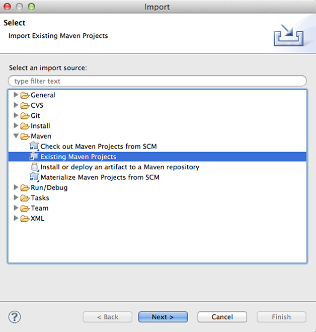
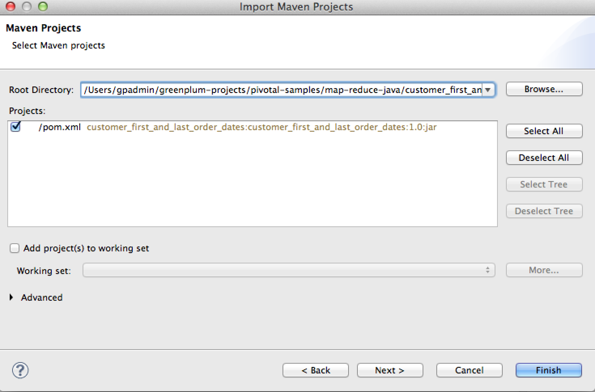
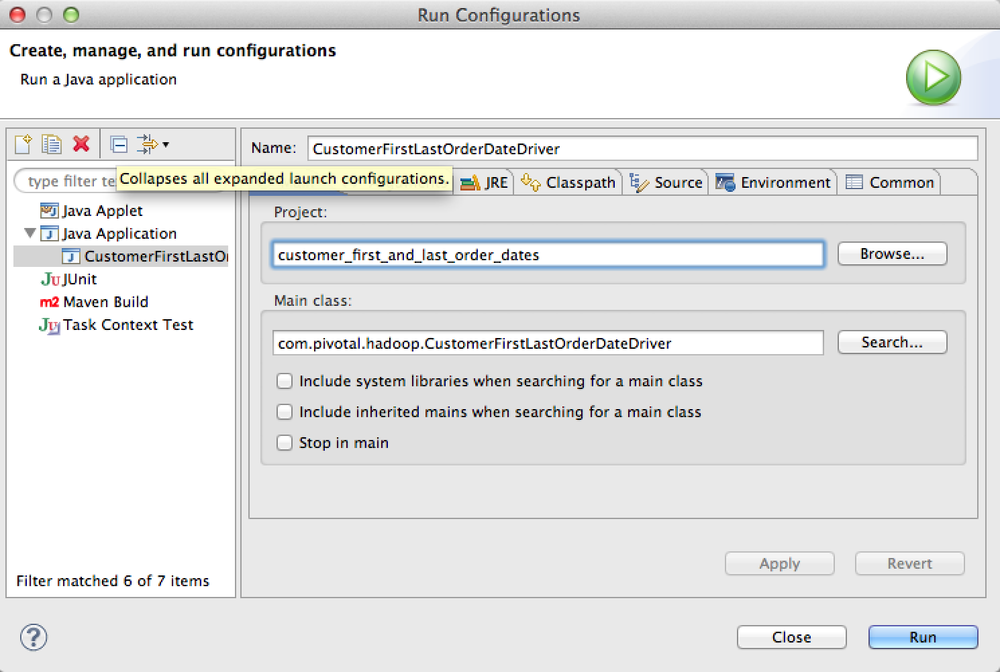

Java MapReduce - First and Last order ID and date for customers
The demo dataset has information about customer orders. Each order record contains the customer ID of the customer. This is a simple example that demonstrates how to return every customer with their first order ID and date and their last order ID and date.
Prerequisites
Install the Pivotal HD Single-Node Virtual Machine and start the Pivotal HD services. See Pivotal HD Single-Node VM.
Load the Retail Demo Dataset before following the steps in this section. See Retail Demo Dataset.
Working with the Tutorial
- Use the shortcut on the desktop to launch the Spring Tool Suite (STS).
- Accept the default Workspace or enter a path.
- Import the project to the Spring Tool Suite IDE:
- Select File->Import and select Maven > Existing Maven Projects

- Click Next.
- Click Browse and browse to the following directory where the source code is present:
/pivotal-samples/map-reduce-java/customer_first_and_last_order_dates
- Click Finish.

STS imports the Maven project. Note the progress indicator in the lower-right portion of the application.
- Select File->Import and select Maven > Existing Maven Projects
- Build the Project
- Open the Package Explorer
- Select the project.
- Right-click on the project and select Run As > Maven install.
STS builds the project. Wait until the console operation terminates before continuing.
- Create a Run Configuration
- Open the STS Main Menu Explorer.
- Click Run->Run Configurations
The Run Configurations panel opens.
- Select Java Application from the left panel.
- Click the New icon.
- In the Name box, enter a name for the project.
- Under Project:, click Browse.
- Select the
customer_first_and_last_order_datesproject and click OK. - Under Main class, enter
com.pivotal.hadoop.CustomerFirstLastOrderDateDriver. - Click Apply.
- Select the Arguments tab.
- Enter the following paths in the program arguments box:
/retail_demo/orders/orders.tsv.gz hbase2_output
- Click Apply.
- Click Run.
Messages that display in the console show that the MapReduce program is running. If there are issues, you can see exception messages in the console. The output should be available on the output folder.
- From the main menu, select Run As -> Junit Test to run the unit tests.
- Build the project. From the terminal, run the following commands:
$ cd /pivotal-samples/map-reduce-java/customer_first_and_last_order_dates $ mvn clean compile $ mvn -DskipTests package
- Run Unit tests using the following commands:
cd /pivotal-samples/map-reduce-java/customer_first_and_last_order_dates $ mvn test
- Understand the data formats
Data header:
order_id | customer_id | store_id | order_datetime |ship_completion_datetime | return_datetime | refund_datetime | payment_method_code |total_tax_amount | total_paid_amount | total_item_quantity | total_discount_amount |coupon_code | coupon_amount | order_canceled_flag | has_returned_items_flag |has_refunded_items_flag | fraud_code | fraud_resolution_code | billing_address_line1 |billing_address_line2 | billing_address_line3 | billing_address_city | billing_address_state |billing_address_postal_code | billing_address_country | billing_phone_number | customer_name | customer_email_address | ordering_session_id | website_url
The data is separated by
\t, as shown below:8180565407 49711957 69 2010-10-07 08:48:35 2010-10-10 03:01:47 FreeReplacement 0.41300 5.90000 1 0.05000 None 0.00000 N N N 7385 CLINTON Apt 24 INDIANAPOLIS IN 46201 USA (105)037-5575 Casey Mahon Casey.Mahon@sitebilgi.net OS22196-563554-06-11957 http://myretailsite.emc.com/product_detail
- Decide on the input and output formats The data is in text format and the fields are separated by
\t, which makes the data well-structured for processing. The code uses theTextInputFormatclass, which is a subclass ofFileInputFormatas the input format. By default, the map function retrieves one line at a time for processing. - Designing the Mapper:
We are interested in customer_id ,order_id and order_datetime in every row. In the Mapper code. we will extract
customer_idas key andorder_idandorder_datetimeas values. Since we are selecting two fields as values, we separate the fields using,as the separator.Mapper code:
@Override protected void map(LongWritable offset, Text text, Context context) throws IOException, InterruptedException { String[] tokens = text.toString().split("\t"); String order_id = tokens[0]; String customer_id = tokens[1]; String order_datetime = tokens[3]; key.set(Integer.parseInt(customer_id)); val.set(order_id + "," + order_datetime); context.write(key, val); } - Designing the Reducer:
The Reducer is also a simple instance, similar to the classic word count example. In this case, we are finding the first and last date of orders for each customer, which is passed as a key.
@Override public void reduce(IntWritable key, Iterable<Text> counts, Context context) throws IOException, InterruptedException { StringBuffer temp; Text result = new Text(); StringBuffer lastOrderDate = null; StringBuffer firstOrderDate = null; try { firstlastOrderDate = new StringBuffer(lastOrderDate(key, counts)); } catch (ParseException e) { e.printStackTrace(); } temp = new StringBuffer(key.toString()); temp.append("\t"); temp.append(firstlastOrderDate); result.set(temp.toString()); context.write(NullWritable.get(), result); } public static String lastOrderDate(IntWritable key, Iterable<Text> counts) throws ParseException { ........ ....... return valDate; } - Writing the MapReduce driver code:
Job job = new Job(getConf()); job.setJarByClass(CustomerFirstLastOrderDateDriver.class);
FileInputFormat.setInputPaths(job, new Path(args[0])); Path outputPath = new Path(args[1]); outputPath.getFileSystem(job.getConfiguration()).delete(outputPath,true);
job.setMapperClass(CustomerFirstLastOrderDateMapper.class); job.setReducerClass(CustomerFirstLastOrderDateReducer.class);
FileOutputFormat.setOutputPath(job, new Path(args[1]));
job.setMapOutputKeyClass(IntWritable.class); job.setMapOutputValueClass(Text.class);
job.setOutputKeyClass(NullWritable. class); job.setOutputValueClass(Text.class); job.waitForCompletion(true);;
- Running the tutorial
The following instructions can be used to run the sample on the Pivotal Hd Virtual Machine.
-
Go to the project directory
cd pivotal-samples/map-reduce-java ls cd customer_first_and_last_order_dates
- Submit the job using the following command:
hadoop jar target/customer_first_and_last_order_dates-1.0.jar com.pivotal.hadoop.CustomerFirstLastOrderDateDriver /retail_demo/orders/orders.tsv.gz /output-mr2
- Check the output directory in Hadoop file system. The output directory should contain the
part-r-0000file.View the output using the following command:
hadoop fs -cat /output-mr2/part-r-00000|more
(The output is piped to
morebecause it is lengthy.) The first portion of the output looks like this:137 8228753927 2010-10-02 09:26:40 6952760836 2010-10-10 23:46:16 274 8228753207 2010-10-02 06:49:05 8038062167 2010-10-14 09:17:33 411 8228659208 2010-10-02 02:45:08 6326675610 2010-10-11 11:32:28 548 6734479225 2010-10-01 08:31:08 6953064348 2010-10-10 19:20:25 1096 6734568190 2010-10-01 21:15:03 8181753531 2010-10-07 04:04:26 1370 6734388086 2010-10-01 02:08:12 7412417661 2010-10-12 23:46:44 1507 8456649021 2010-10-03 04:47:50 7412451029 2010-10-12 07:37:18 1644 7136614975 2010-10-04 09:03:40 8038062935 2010-10-14 17:27:29 2055 7570913900 2010-10-08 23:29:35 4877101631 2010-10-13 21:12:05 2192 7136693581 2010-10-04 19:48:16 8037933831 2010-10-14 12:35:21 ...
-
You have successfully run the sample on Pivotal HD!